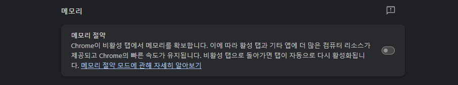
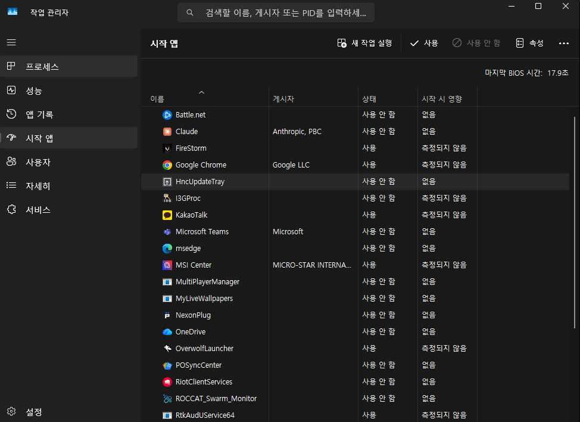
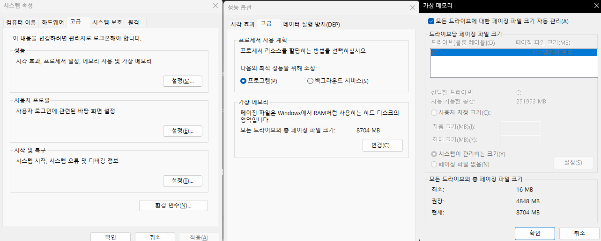

가격이 미쳐버린 램, 용량 부족 응급처치

혹시 요즘 램 가격 보고 깜짝 놀라셨나요? 크롬 탭을 몇 개만 열어도 버벅이고 게임 중에 갑자기 끊기는데, 당장 램을 추가로 살 여유는 없으신가요? 그렇다면 소프트웨어적으로 짜낼 수 있는 만큼 짜내보는 아래 방법들이 도움이 될 거예요.
① 크롬의 메모리 절약 기능을 켜세요.
- 크롬 우측 상단 점 3개(⋮) 클릭 → 설정
- 왼쪽 메뉴에서 "성능" 클릭
- "메모리 절약" 스위치를 켜짐으로 변경

활성화하면 비활성 탭(지금 안 보고 있는 탭)에서 크롬이 메모리를 확보해서, 활성 탭과 다른 프로그램에 더 많은 리소스를 남겨줍니다. 비활성 탭으로 돌아가면 자동으로 다시 활성화되니 사용에 불편은 거의 없습니다.
② 작업 관리자의 "시작 앱"을 정리하세요 — PC를 켜자마자 같이 실행되는 프로그램을 줄여서, 평소에 백그라운드가 차지하는 램을 최대한 비워두는 방법입니다.
- Ctrl+Shift+Esc를 눌러 작업 관리자 열기
- 왼쪽 메뉴에서 "시작 앱" 클릭
- 평소 PC를 켜자마자 자동으로 실행될 필요가 없는 프로그램을 선택하고 우클릭 → "사용 안 함" — 그때그때 필요할 때만 직접 켜서 쓰면 됩니다

특히 게임을 하는데 램이 부족하다면, 크롬이나 다른 게임처럼 램을 많이 쓰는 프로그램은 반드시 끄고 게임하는 걸 추천합니다.
③ 저장장치를 가상 메모리로 활용하는 방법도 있지만, 아무 상황에서나 추천하지는 않습니다.
저장장치가 1개뿐이거나 SSD가 아니라면(HDD라면) 이 방법은 추천하지 않습니다. 최적화가 잘 안 된 게임을 하신다면 메모리 누수로 오히려 문제가 커질 위험도 있어서 역시 비추천입니다.
반대로 SSD가 2개 이상이고, 그중 게임·윈도우가 설치되지 않은 SSD가 따로 있다면 얘기가 다릅니다 — 이 경우엔 그 SSD를 가상 메모리 전용으로 쓰는 걸 추천합니다.
- 윈도우 키 → "고급 시스템 설정" 검색 → 실행
- "고급" 탭 → "성능" 항목의 "설정" 버튼 클릭
- 다시 "고급" 탭 → "가상 메모리" 항목의 "변경" 버튼 클릭
- "모든 드라이브에 대해 페이징 파일 크기 자동 관리"를 체크 해제하고, 게임·윈도우가 설치되지 않은 SSD 드라이브를 선택
- 어지간한 경우에는 "시스템이 관리하는 크기"를 선택하는 걸 추천합니다 — 용량을 직접 계산하지 않아도 윈도우가 알아서 적절한 크기로 잡아줍니다. 직접 정하고 싶다면 "사용자 지정 크기"를 선택할 수도 있습니다
- 선택한 뒤 "설정" → "확인"

위 조건에 해당하지 않거나, 여기까지도 너무 복잡하게 느껴지신다면… 그냥 마음의 준비를 하고 램을 사는 게 가장 확실합니다.